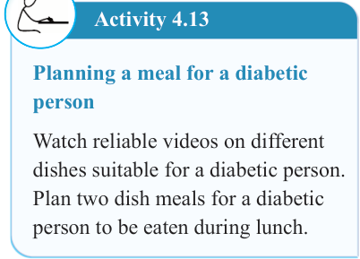

108


Food and Human Nutrition

Form Two

Activity 4.13
Planning a meal for a diabetic person
Watch reliable videos on different dishes suitable for a diabetic person.
Plan two dish meals for a diabetic person to be eaten during lunch.
Meals for vegetarians
Vegetarians are people who do not eat animal flesh, poultry or fish. However, some of them eat animal products such as milk and eggs. They use plants as their primary food source. People become vegetarians due to various reasons.
Some become vegetarians because of religious restriction of not eating meat; some have health problems; and others believe it is wrong to kill or eat an animal.
Vegetarians can be classified as Strict vegetarians, Lacto-vegetarians, Ovo- vegetarians and Lacto-ovo vegetarians.
Vegans: These are also known as strict vegetarians. They consume foods from plant sources only. They neither eat animal flesh, poultry and fish nor their products.
Lacto-vegetarians
These individuals do not consume animal flesh, poultry and fish. Instead, they consume dairy products such as milk, cheese, butter, cream, yogurt
along with other plant food sources.
Lacto-ovo vegetarians
These individuals consume eggs, milk, milk products and other plant sources.
Ovo-vegetarians
These individuals consume only eggs and other plant food sources.
Important considerations when planning for vegetarian meals include:
(i)
The meal should be well-
balanced, containing all the nutrients in correct amounts and right proportions.
(ii) For strict vegetarians, their meals should include various protein- rich plant foods such as legumes, pulses, seeds and nuts to ensure sufficient intake of proteins.
(iii) The meal should contain vitamin
C-rich foods such as citrus fruits together with non-haem iron foods such as dark-green leafy vegetables to increase iron uptake in the body.
(iv) Vary meals to stimulate appetite and to prevent food monotony.
This
can
be
achieved
by
preparing, cooking and serving food in different and appealing ways.
(v) Animal products such as cheese and milk dishes should be included in the meal, except for strict and ovo-vegetarians. Eggs

17/09/2025 16:30